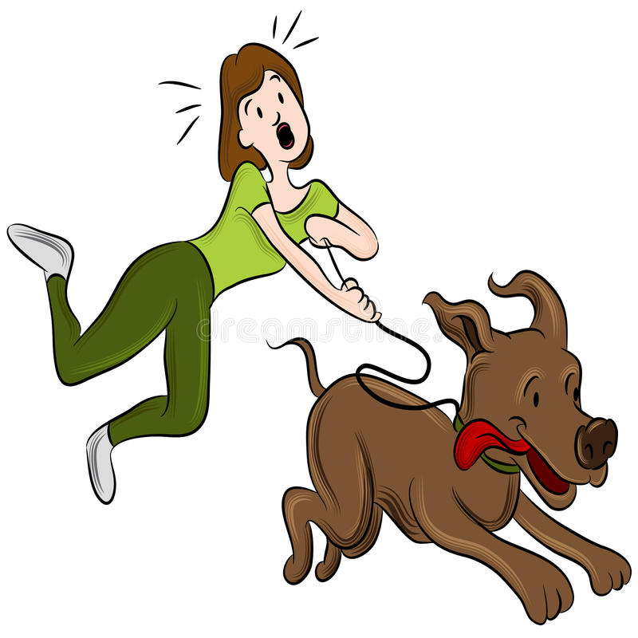

How to Stop Pulling On Leash
Updated: Oct 19, 2021 | BLOG
If your dog pulls on leash, you know just how FRUSTRATING a walk can be. The good news is that it doesn't
have to be that way.
First, you need to figure out WHY your pup is pulling. Do they naturally walk faster than you? Are
they trying to get to a specific sniff spot? Are they overly energetic and excited, or overwhelmed and
trying to head for home? There are lots of potential reasons for pulling, and identifying the reason can
help us fix the issue.
If your dog is just super duper excited about the outside world, you may be making life harder by trying to
get out their energy on a walk. For some of these dogs, we want to tire them out BEFORE we leash them up,
with something like a good game of tug. In other cases, they might be dragging you toward the squirrel they
just saw or the dog they want to meet, which might tell you that you need to walk in calmer environments for
a bit.
Try giving your dog MORE freedom to walk and sniff, not less! Instinctively, we want to force our dog to
stop pulling and do our bidding- to walk perfectly by our side like a robot that listens. But in reality, we
can often address pulling by giving our dogs more freedom. LET YOUR DOG SNIFF! Sniffing is incredibly
important for dogs, and is a major reason for pulling. So what would happen if you let your dog spend time
sniffing? Once they realize they don't need to pull to get to the good stuff, the pulling often stops. We
also recommend checking out long lines, which are longer leashes that give your dog a bit more space to
explore without needing to pull you.
We also recommend working on a few critical skills, starting with "check ins." If your dog looks at you
during a walk- Treat! If you say their name or make a kissy noise and they look at you- treat! We want them
to get used to knowing that great stuff happens when they're by your side and engaging with you. Remember,
you need to practice leash walking in easy environments first. Try in your living room or garage before
graduating to a yard or an empty street. It takes time to develop these habits!
Once your dog has some great skills, use real life rewards to reinforce them. Reward nice leash walking with
access to go sniff and explore things, or go say hi to a person or dog (when safe to do so!). There are so
many things in the environment that you can use to reward your dog for walking nicely.
As always, take deep breaths and be patient! Your dog is learning skills in a world they don't always
understand, so be kind to your dog (and yourself) as they're learning not to pull.
Need some help with this? Book a private training session with us!
Ready for more info? Check out our recent webinar on leash pulling!
Comments